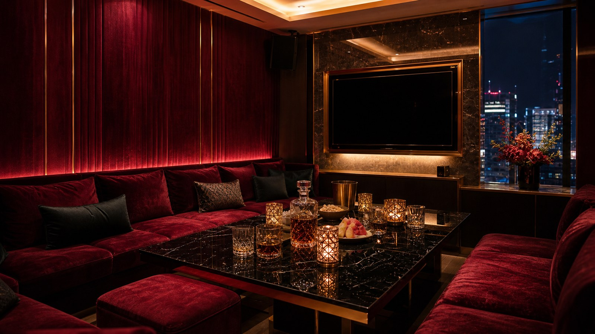
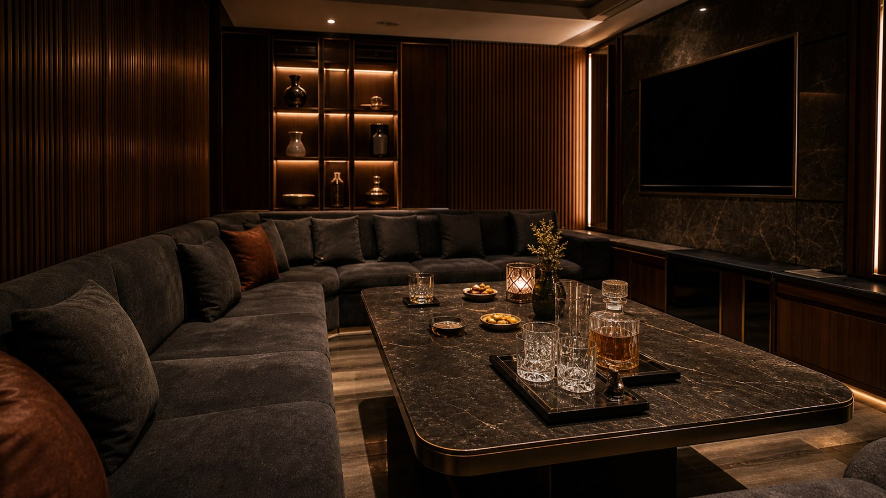
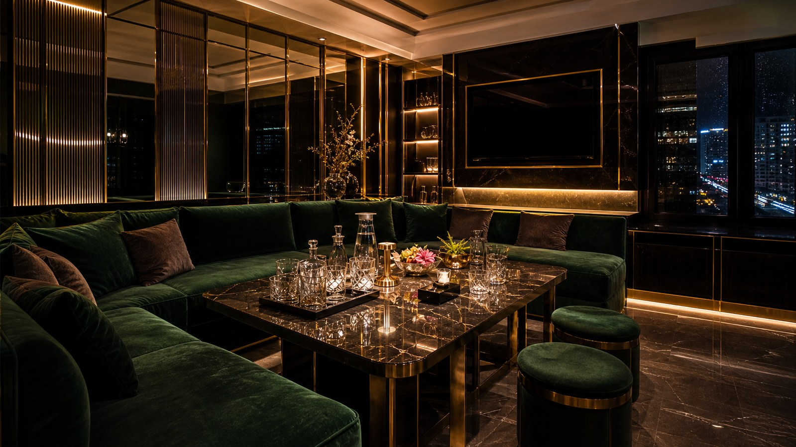
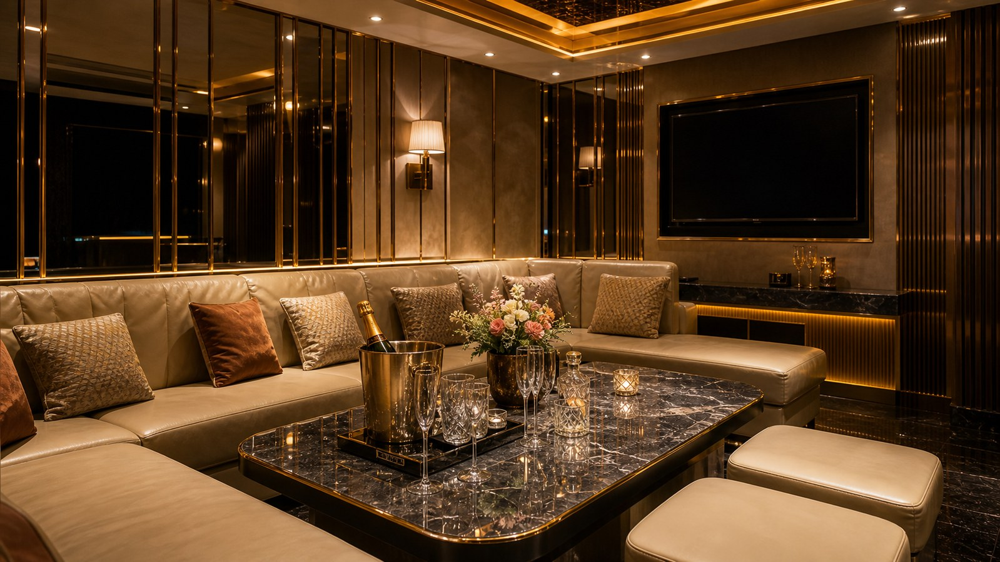
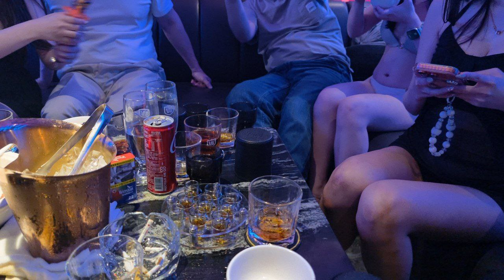
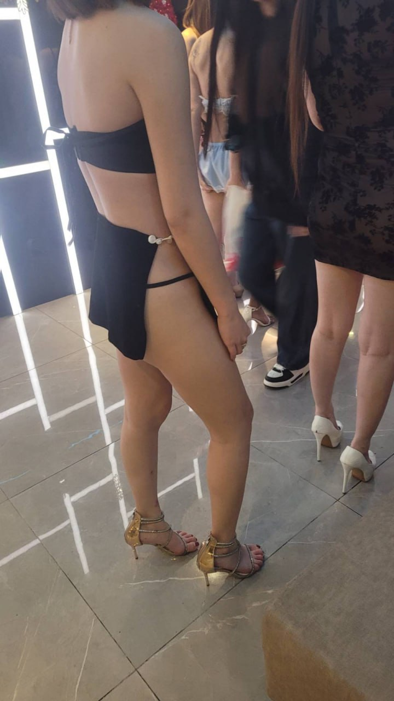

世盟百欣商務酒店適合什麼安排？
世盟百欣商務酒店屬於較商務取向的制禮服店型，適合需要兼顧接待感與正式程度的客人。安排前建議確認是否為會員制或預約制。 這頁可以先當成「適不適合這一局」的檢查表，不用急著只比最低價。 常見適合情境可以先看：第一次體驗台北制服店、三五好友下班放鬆、生日局或熱鬧聚會。
世盟百欣商務酒店屬於較商務取向的制禮服店型，適合需要兼顧接待感與正式程度的客人。安排前建議確認是否為會員制或預約制。
商務酒店名稱容易被搜尋，適合查資料型客人。 頁面標示區域為 台北東區／忠孝復興一帶；地址或集合資訊為：台北市大安區忠孝復興一帶，實際入口與樓層請預約確認。
制服店要先看現場節奏、主題感、包廂唱歌與同行成員能不能快速進入狀況。 包廂費約 NT$ 3,000 起、人頭費約 NT$ 500／人、服務費約 NT$ 1,000／包、檯費約 NT$ 2,500／60 分鐘；酒水、指定、加時與刷卡費可能另外計算。 預約前建議把人數、抵達時間、預算和想要的現場節奏先講清楚。
| 分類 | 制服店 |
|---|---|
| 區域 | 台北東區／忠孝復興一帶 |
| 地址／地點 | 台北市大安區忠孝復興一帶，實際入口與樓層請預約確認 |
| 營業時間 | 晚間營業，請預約確認 |
| 包廂費估算 | NT$ 3,000 起 |
| 人頭費估算 | NT$ 500／人 |
| 服務費估算 | NT$ 1,000／包 |
| 檯費估算 | NT$ 2,500／60 分鐘 |
| 基本時間 | 120 分鐘起 |
| 方案備註 | 依現場方案 |
依公開網路名單與消費資訊整理，實際營業狀態、價格與包廂安排以預約確認為準。
世盟百欣商務酒店屬於較商務取向的制禮服店型，適合需要兼顧接待感與正式程度的客人。安排前建議確認是否為會員制或預約制。 這頁可以先當成「適不適合這一局」的檢查表，不用急著只比最低價。 常見適合情境可以先看：第一次體驗台北制服店、三五好友下班放鬆、生日局或熱鬧聚會。
世盟百欣商務酒店頁面標示區域為 台北東區／忠孝復興一帶；地址資訊為：台北市大安區忠孝復興一帶，實際入口與樓層請預約確認。第一次去建議先確認集合點、入口、樓層、附近停車或捷運下車後的動線。
和禮服店相比，制服店通常更熱鬧；和便服店相比，互動節奏更明顯，適合想把氣氛拉起來的朋友局。 如果同行比較在意安靜談話或正式接待，可以同步比較禮服店或便服店。 比較時可搭配「世盟百欣商務酒店、台北制服店推薦、林森北路制服店、中山區制服店、制服店地址、制服店包廂費、台北公主店、台北禮服店」一起看，重點放在場合、人數與預算是否一致。
Search Notes
找 世盟百欣商務酒店 時，可以搭配 世盟百欣商務酒店、台北制服店推薦、林森北路制服店、中山區制服店、制服店地址、制服店包廂費、台北公主店、台北禮服店。這些字不是硬塞關鍵字，而是把店名、店型、地點、消費與預約需求放在同一頁說清楚。
公開資料描述為制禮服酒店，偏頂級商務客與會員預約制。 制服店要先看現場節奏、主題感、包廂唱歌與同行成員能不能快速進入狀況。 營業資訊目前寫作：晚間營業，請預約確認，營業狀態請預約確認。
適合想要熱鬧、輕鬆、朋友一起玩的人，也適合生日局、下班放鬆、第一次找林森北酒店或想知道台北制服店怎麼玩的人。若同行成員喜歡活潑互動與主題造型，制服店通常比便服店更容易帶動氣氛。 若同行需求和這段不一致，預約前就先說明，幹部才比較好避開不合適的安排。
包廂費約 NT$ 3,000 起、人頭費約 NT$ 500／人、服務費約 NT$ 1,000／包、檯費約 NT$ 2,500／60 分鐘；酒水、指定、加時與刷卡費可能另外計算。 預約時先說明人數、抵達時間、預算、想要熱鬧或偏安靜、是否需要大包廂。到店後建議先確認基本時間、檯費單位、包廂費、人頭費、服務費與酒水，避免加時或加點後超出預算。
想找制服店地點或地址時，不只看路名，也要確認入口、樓層與當日包廂。 世盟百欣商務酒店屬於制服店類型，適合先依「人數、時間、預算、想要熱鬧或安靜」來判斷是否合適。預約時可以直接把需求傳給台北夜總會俞右，再依當日店況、包廂、人力與預算安排。
如果你是透過「世盟百欣商務酒店、台北制服店推薦、林森北路制服店、中山區制服店、制服店地址、制服店包廂費、台北公主店、台北禮服店」找到這頁，建議把頁面資訊轉成三個實際問題：地點是否方便、費用是否符合人數、現場節奏是否適合這次聚會。世盟百欣商務酒店目前頁面標示區域為 台北東區／忠孝復興一帶；地址或集合資訊為：台北市大安區忠孝復興一帶，實際入口與樓層請預約確認。
安排 世盟百欣商務酒店 前，先把日期、抵達時間、人數、預算上限和想要的氣氛講清楚，才不會只用店名猜現場感。
包廂費約 NT$ 3,000 起、人頭費約 NT$ 500／人、服務費約 NT$ 1,000／包、檯費約 NT$ 2,500／60 分鐘；酒水、指定、加時與刷卡費可能另外計算。 正式金額仍要依預約確認與現場規定為準。
公開資料描述為制禮服酒店，偏頂級商務客與會員預約制。 下面幾點整理的是這間店比較需要先看的差異，不只是把同一套店型說明換成店名。
商務酒店名稱容易被搜尋，適合查資料型客人。
重點在包廂穩定度與聚會節奏。
可和其他制服店一起比較費用與地點。
實際營業狀態要先確認，避免照舊資料跑。
Media
照片可以先看座位距離、桌面大小與燈光明暗，再搭配上方影片判斷現場節奏。




Related

皇冠制服酒店在台北制服店搜尋中辨識度高，適合想把氣氛做滿、又希望消費流程清楚的新手與朋友局。店型重點是主題制服、包廂唱歌與較直接的互動節奏。

金聰制服酒店常被歸類為林森北制服店代表名單，適合想體驗傳統台北酒店包廂文化的客人。預約時可先確認當日包廂大小、公關安排與基本消費。

豪昇制服酒店主打熱鬧與聚會感，適合三五好友、慶生或第一次嘗試制服店的人。若重視預算控制，建議先用試算系統估算基本時間與人數。
世盟百欣商務酒店常見分類為制服店。可以先用「台北制服店推薦、林森北路制服店、中山區制服店」這類關鍵字一起比較，再看地點、預算與聚會目的是否合適。
世盟百欣商務酒店地點可先看 台北東區／忠孝復興一帶；地址資訊為：台北市大安區忠孝復興一帶，實際入口與樓層請預約確認。實際集合點、入口、樓層與包廂安排建議預約時再次確認。
包廂費約 NT$ 3,000 起、人頭費約 NT$ 500／人、服務費約 NT$ 1,000／包、檯費約 NT$ 2,500／60 分鐘。正式金額仍要依預約確認與現場規定為準。 若有酒水、指定、加時或特殊安排，費用會再變動。
可以，但第一次建議先請幹部說明基本時間、包廂費、人頭費、服務費、檯費與酒水。節奏通常比禮服店更直接，適合想把氣氛帶起來的聚會。
Reservation
提供台北制服店、林森北酒店、台北禮服店、便服店與男模會館預約諮詢。請先提供日期、時間、人數、預算與偏好店型。